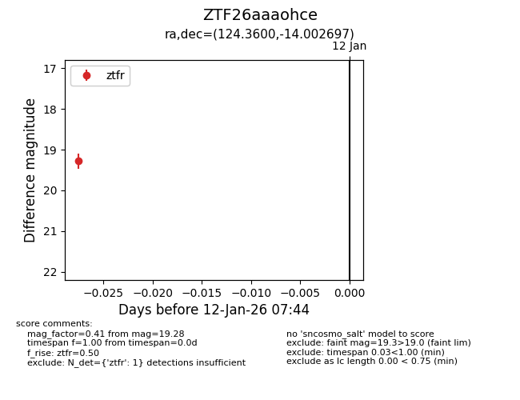
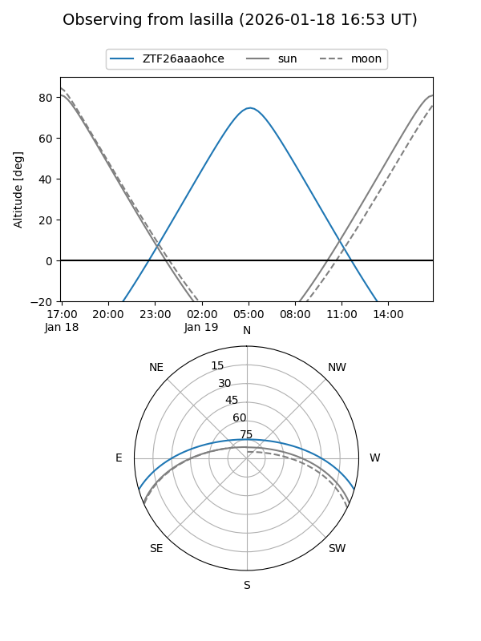
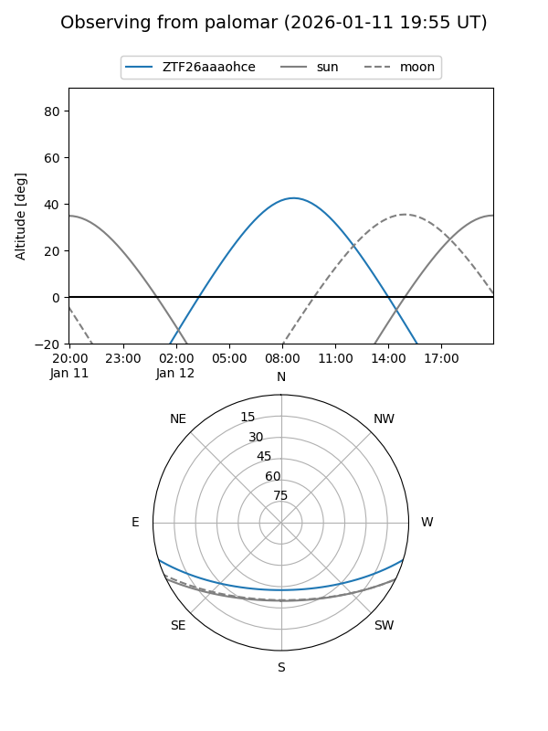
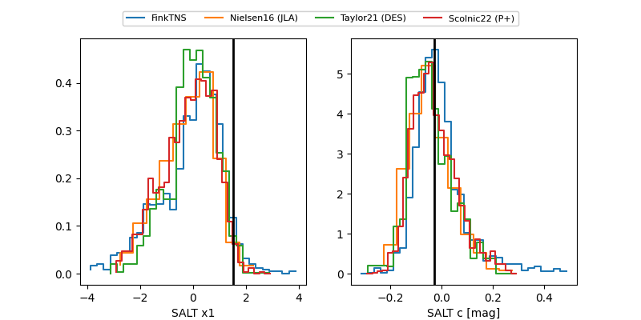

ZTF26aaaohce
Target ZTF26aaaohce at 2026-01-14 07:50
Aliases and brokers:
FINK: link
Lasair: link
ALeRCE: link
alt names
ZTF26aaaohce (ztf,fink_ztf)
Coordinates:
equatorial (ra, dec) = 124.3600,-14.00270
equatorial (HMS+DMS) = 08:17:26.39,-14:00:09.71
galactic (l, b) = (235.6248,+11.89756)
Flags:
Photometry:
last ztfr=19.28
1 ztfr detections
Lightcurve

Visibility


Additional plots
